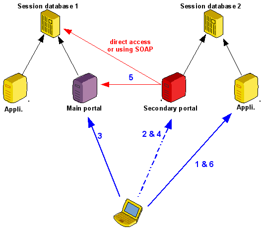

Chaining Lemonpdap::NG portals
Since version 0.9.4, Lemonldap::NG is able to delegate authentication to a remote portal. This can be use to share authentication without sharing session database to some handlers.Principle
- The main portal is configured to use CDA (cross-domain authentication: set just "CDA => 1" in the portal). The secondary portal is declared in the manager of the main Lemonldap::NG structure (else user will be rejected).
- The portal of the secondary Lemonldap::NG structure is configured to delegate authentication to a remote portal. A request to the main session database is done to be sure that the session exists :
- If "exportedAttr" is set, only those attributes are copied in the session database of the secondary Lemonldap::NG structure. Else, all datas are copied in the session database.
kinematic

- User tries to access to an application in the secondary Lemonldap::NG structure without having a session in this area
- Redirection to the portal of the secondary area (transparent)
- Redirection to the portal of the main area and normal authentication (if not done before)
- Redirection to the portal of the secondary area (transparent)
- Secondary portal check if remote session is available. It can be done via direct access to the session database or using SOAP access. Then it creates the session (with attribute filter)
- User can now access to the protected application
Configuration
Main Lemonldap::NG structure
- Portal : set "CDA => 1",
- Manager : declare the secondary portal in protected sites.
Secondary Lemonldap::NG structure
Configure the portal to use the remote Lemonldap::NG structure. Example
my $p = Lemonldap::NG::Portal->new( {
authentication => 'Remote',
userDB => 'Remote',
remotePortal => 'https://remote/',
remoteGlobalStorage => 'Lemonldap::NG::Common::Apache::Session::SOAP',
remoteGlobalStorageOptions => {
proxy => 'https://remote/index.pl/sessions',
ns => 'https://remote/Lemonldap/NG/Common/CGI/SOAPService',
},
# Optional: restrict exported attributes in the secondary area
exportedAttr => 'uid cn mail',
... as usual ...
});
Example : interoperability between 2 organizations
Using this, we can do a very simple interoperability system between 2 organizations using both Lemonldap::NG :- each area has 2 portals :
- 1 normal
- 1 type Remote that delegates authentication to the second organization (just an other file on the same server)
- The normal portal has a link included in the authentication form pointing to the remote portal for the users of the other organization

- 1 user try to access to the portal
- external users click to be redirected to the remote type portal
- after redirection, normal authentication in the remote portal
- redirection to the remote type portal
- validation of the session : external user have now a local session